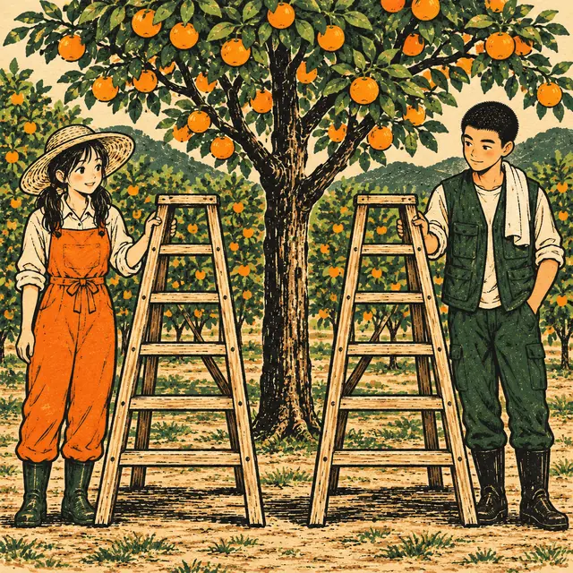

課前暖身漫畫：答案不只一個？
採完柑橘休息時，小柚出了一道謎題：「我想一個數，它的平方減掉它的 \(3\) 倍，剛好是 \(10\)。」阿圃試出 \(5\)：\(5^2 - 3 \times 5 = 10\)，以為答完了；小柚卻說還有另一個數也可以。設這個數是 \(x\)，謎題就是 \(x^2 - 3x = 10\)——這種方程式往往有兩個解，這一節要學會把它們一次都找出來。
重點 1：一元二次方程式的意義——先化簡，再判斷
重點整理與敘述
- 定義：一個方程式經化簡後，可以寫成 \(ax^2 + bx + c = 0\)（其中 \(a \ne 0\)）的形式，就稱為 \(x\) 的一元二次方程式。
- 三個條件：有等號；只有一種未知數（一元）；化簡後最高次數是 \(2\)（二次）。
- 一定要先化簡：\(x^2 + 3x = x^2 - 8\) 移項後 \(x^2\) 互相抵消，剩 \(3x + 8 = 0\)，是一元一次方程式。
- 方程式和多項式不同：\(x^2 + x - 3\) 沒有等號，是二次式，不是方程式。
- \(b\)、\(c\) 可以是 \(0\)：\(2x^2 = 5x\)、\(6x^2 - 15 = 0\) 都是一元二次方程式。
| 式子 | 化簡後 | 判斷 |
|---|---|---|
| \(2x^2 = 5x\) | \(2x^2 - 5x = 0\) | 是 |
| \((x + 1)(x - 6) = 4\) | \(x^2 - 5x - 10 = 0\) | 是 |
| \(x^2 + 3x = x^2 - 8\) | \(3x + 8 = 0\) | 一元一次 |
| \(x^2 + x - 3\) | 沒有等號 | 不是方程式 |
視覺互動探索：方程式分類檢查站
選一個式子，看它逐一通過（或卡在）哪一關：有沒有等號、化簡後長什麼樣子、有幾種未知數、最高幾次。
形成性評量 (一元二次方程式的意義)
Q1. 下列何者是 \(x\) 的一元二次方程式？
解析：答案為 C。展開得 \(x^2 + 3x - 4 = 0\)：有等號、只有 \(x\)、最高 \(2\) 次。
A 錯：沒有等號，是二次式，不是方程式。
B 錯：移項後 \(x^2\) 抵消，剩 \(2x + 5 = 0\)，是一元一次方程式。
D 錯：有 \(x\)、\(y\) 兩種未知數，不是一元。
Q2. 方程式 \((3x - 1)^2 = 9x^2 + 4\) 化簡後，是哪一種方程式？
解析：答案為 B。左邊展開後移項：
\[\begin{aligned} & 9x^2 - 6x + 1 = 9x^2 + 4 \\ & -6x - 3 = 0 \end{aligned}\]
\(x^2\) 項抵消了，最高只剩 \(1\) 次，是一元一次方程式。
A 錯：要看化簡後的次數，不是看原式有沒有平方。
C 錯：有等號，是方程式。
D 錯：只有 \(x\) 一種未知數。
重點 2：解的意義——代入後兩邊相等
重點整理與敘述
- 解（根）：把某數代入方程式的未知數，使等號左右兩邊的值相等，這個數就是方程式的解，也叫做根。
- 解方程式：求出方程式所有解的過程。
- 判別方法：分別算出左邊、右邊的值，相等就是解。例如判別 \(x^2 - 3x = 4\)：
| 代入 | 左邊 \(x^2 - 3x\) | 右邊 | 是解嗎？ |
|---|---|---|---|
| \(x = 4\) | \(16 - 12 = 4\) | \(4\) | 是 |
| \(x = 2\) | \(4 - 6 = -2\) | \(4\) | 不是 |
| \(x = -1\) | \(1 + 3 = 4\) | \(4\) | 是 |
- 代入負數要加括號：\((-1)^2 = 1\)，不是 \(-1^2 = -1\)。
- 一元二次方程式最多有兩個解，上例的兩個解是 \(4\) 和 \(-1\)。
- 代入法適合「判別」，不適合「求解」：係數大一點就試不完，接下來要學更有效率的方法。
視覺互動探索：代入檢驗天平
選一個方程式，拉滑桿代入不同的 \(x\)。左右兩邊的值一樣，天平才會平衡——找出全部的解：
形成性評量 (解的意義)
Q3. 下列哪一個數是一元二次方程式 \(x^2 - 3x = 28\) 的解？
解析：答案為 D。代入 \(x = 7\)：左邊 \(7^2 - 3 \times 7 = 49 - 21 = 28\)，等於右邊。
A 錯：\(4^2 - 3 \times 4 = 4\)，不是 \(28\)。
B 錯：\((-7)^2 - 3 \times (-7)\)
C 錯：\(14^2 - 3 \times 14 = 196 - 42 = 154\)。
Q4. 判別 \(x = -3\) 是不是 \(2x^2 + 5x = 3\) 的解，下列哪一個計算與結論正確？
解析：答案為 A。\((-3)^2 = 9\)，所以左邊 \(= 2 \times 9 - 15 = 3\)，等於右邊，\(-3\) 是解。
B 錯：把 \((-3)^2\) 算成 \(-9\)；負數的平方是正的。
C 錯：\(2x^2\) 是先平方再乘 \(2\)，不是把 \(2x\) 整個平方。
D 錯：只要使兩邊相等，負數也是解。
重點 3：若 \(A \times B = 0\)，則 \(A = 0\) 或 \(B = 0\)
重點整理與敘述
- 兩數都不是 \(0\)，乘積一定不是 \(0\)。
- 反過來說：乘積是 \(0\)，兩數至少有一個是 \(0\)。
- 「\(A = 0\) 或 \(B = 0\)」包含三種情形：
| 情形 | \(A \times B\) | 可能嗎？ |
|---|---|---|
| \(A = 0\)，\(B \ne 0\) | \(0\) | 可能 |
| \(A \ne 0\)，\(B = 0\) | \(0\) | 可能 |
| \(A = 0\)，\(B = 0\) | \(0\) | 可能 |
| \(A \ne 0\)，\(B \ne 0\) | 不是 \(0\) | 不可能 |
- 用來解方程式：\(x - 4\) 與 \(2x + 5\) 都是數，所以 \[\begin{aligned} & (x - 4)(2x + 5) = 0 \\ & x - 4 = 0 \text{ 或 } 2x + 5 = 0 \\ & x = 4 \text{ 或 } x = -\frac{5}{2} \end{aligned}\] 方程式的解為 \(4\) 和 \(-\frac{5}{2}\)。
- 過程寫「或」、結論寫「和」：兩個都是解。
- 只有「乘積 \(= 0\)」才能這樣拆，乘積是別的數就不行（重點 10）。
視覺互動探索：乘法表裡的「十」字
拉動 \(A\)、\(B\)，看看目前的格子落在哪裡。乘積是 \(0\) 的格子都塗成橘色，它們排成什麼形狀？
形成性評量 (乘積為 0)
Q5. 已知 \(A\)、\(B\) 為兩數，且 \(A \times B = 0\)。下列敘述何者一定正確？
解析：答案為 B。乘積是 \(0\)，兩數至少有一個是 \(0\)。
A 錯：不一定兩個都是 \(0\)，例如 \(0 \times 5 = 0\)。
C 錯：兩數都不是 \(0\) 時，乘積不會是 \(0\)。
D 錯：\(A = 0\) 時 \(B\) 可以是任何數，也可以是 \(0\)。
Q6. 方程式 \((x + 7)(3x - 2) = 0\) 的解為何？
解析：答案為 C。
\[\begin{aligned} & x + 7 = 0 \text{ 或 } 3x - 2 = 0 \\ & x = -7 \text{ 或 } x = \frac{2}{3} \end{aligned}\]
A 錯：兩個解的正負號都弄反了。
B 錯：\(3x = 2\) 要除以 \(3\)，得 \(\frac{2}{3}\)，不是 \(\frac{3}{2}\)。
D 錯：\(3x - 2 = 0\) 只移了項，忘了除以 \(3\)。
重點 4：提公因式 \(x\)——\(x = 0\) 一定是一個解
重點整理與敘述
- 形如 \(ax^2 + bx = 0\)（沒有常數項）：每一項都有 \(x\)，提出 \(x\)。
- 例： \[\begin{aligned} & 3x^2 + 8x = 0 \\ & x(3x + 8) = 0 \\ & x = 0 \text{ 或 } 3x + 8 = 0 \end{aligned}\] 解為 \(0\) 和 \(-\frac{8}{3}\)。
- \(x = 0\) 不能漏掉：它讓第一個因式等於 \(0\)。
- 不可以兩邊同除以 \(x\)：\(x\) 可能是 \(0\)，除下去就把 \(x = 0\) 這個解丟掉了。
- 係數有分數，先同乘：\(\frac{1}{2}x^2 - 3x = 0\) 同乘以 \(2\)，得 \(x^2 - 6x = 0\)，解為 \(0\) 和 \(6\)。
② 左邊分解成兩個一次式的乘積
③ 令每個因式分別為 \(0\)
④ 解這兩個一元一次方程式
視覺互動探索：提出 \(x\) 的工作台
調整 \(x^2\) 項與 \(x\) 項的係數，再切換 \(x^2\) 係數的分母，看看係數是分數時要先多做哪一步：
形成性評量 (提公因式 \(x\))
Q7. 一元二次方程式 \(7x^2 + 9x = 0\) 的解為何？
解析：答案為 D。
\[\begin{aligned} & x(7x + 9) = 0 \\ & x = 0 \text{ 或 } 7x + 9 = 0 \end{aligned}\]
解為 \(0\) 和 \(-\frac{9}{7}\)。
A 錯：兩邊同除以 \(x\)，漏掉了 \(x = 0\)。
B 錯：\(7x = -9\)，解是負的。
C 錯：分子分母寫反了，應該是 \(-9 \div 7\)。
Q8. 一元二次方程式 \(\frac{1}{4}x^2 + 5x = 0\) 的解為何？
解析：答案為 A。兩邊同乘以 \(4\)：
\[\begin{aligned} & x^2 + 20x = 0 \\ & x(x + 20) = 0 \end{aligned}\]
解為 \(0\) 和 \(-20\)。
B 錯：\(x + 20 = 0\) 得 \(x = -20\)，不是 \(20\)。
C 錯：漏掉了 \(x = 0\)。
D 錯：\(\frac{1}{4}x = -5\) 要乘以 \(4\)，不是乘以 \(\frac{1}{4}\)。
重點 5：提整組公因式——括號當成一個數
重點整理與敘述
- 兩項都有同一組括號：把整組括號當成一個數提出來，不必展開。
- 例： \[\begin{aligned} & 3x(2x + 1) - 4(2x + 1) = 0 \\ & (2x + 1)(3x - 4) = 0 \end{aligned}\] 解為 \(-\frac{1}{2}\) 和 \(\frac{4}{3}\)。
- 前面是減號：\(-4(2x + 1)\) 提出 \((2x + 1)\) 後，留下的是 \(-4\)，正負號要跟著走。
- 中括號裡要化簡： \[\begin{aligned} & (x - 3)(x + 5) + 2(x - 3) = 0 \\ & (x - 3)[(x + 5) + 2] = 0 \\ & (x - 3)(x + 7) = 0 \end{aligned}\] 解為 \(3\) 和 \(-7\)。
- 展開再整理也算得出來，但步驟多、容易算錯。
視覺互動探索：整組提出工作台
調整共同的括號 \((ux + v)\)、前面那一項，以及後面那一項的係數 \(k\)。看看提出括號後，中括號裡剩下什麼：
形成性評量 (提整組公因式)
Q9. 一元二次方程式 \(3x(4x - 5) + 2(4x - 5) = 0\) 的解為何？
解析：答案為 C。提出 \((4x - 5)\)：
\[\begin{aligned} & (4x - 5)(3x + 2) = 0 \\ & 4x - 5 = 0 \text{ 或 } 3x + 2 = 0 \end{aligned}\]
解為 \(\frac{5}{4}\) 和 \(-\frac{2}{3}\)。
A 錯：\(3x + 2 = 0\) 得 \(x = -\frac{2}{3}\)，是負的。
B 錯：\(4x - 5 = 0\) 得 \(x = \frac{5}{4}\)，是正的。
D 錯：兩個分數都上下顛倒了。
Q10. 一元二次方程式 \((x + 4)(x - 1) - 11(x - 1) = 0\) 的解為何？
解析：答案為 D。提出 \((x - 1)\)，中括號裡化簡：
\[\begin{aligned} & (x - 1)[(x + 4) - 11] = 0 \\ & (x - 1)(x - 7) = 0 \end{aligned}\]
解為 \(1\) 和 \(7\)。
A 錯：\(x - 1 = 0\) 得 \(x = 1\)，不是 \(-1\)。
B 錯：把 \(-11\) 寫成 \(+11\)，得 \(x + 15 = 0\)。
C 錯：\(x - 7 = 0\) 得 \(x = 7\)，不是 \(-7\)。
重點 6：兩邊有相同因式——先移項，不可以同除
重點整理與敘述
- 先移項使右邊為 \(0\)，再提出兩邊共同的因式。
- 例：解 \((x + 2)(3x - 1)\)
\({}= (x + 2)(x + 7)\)。移項後提出 \((x + 2)\)： \[\begin{aligned} & (x + 2)[3x - 1 - (x + 7)] = 0 \\ & (x + 2)(2x - 8) = 0 \end{aligned}\] 解為 \(-2\) 和 \(4\)。 - 中括號裡是整組相減：\(-(x + 7)\) 的每一項都要變號。
- 為什麼不能兩邊同除以 \((x + 2)\)？同除後得 \(3x - 1 = x + 7\)，只剩 \(x = 4\)。但 \(x = -2\) 時 \(x + 2 = 0\)，兩邊都是 \(0\)，等號成立——它也是解，卻被除掉了。
- 原因：\(0\) 不能當除數；含 \(x\) 的式子可能等於 \(0\)，就不能拿來同除。
視覺互動探索：同除會丟掉哪個解？
選一題，先看正確的解法，再切到「兩邊同除」，比對少了哪一個解，並代回去驗證它真的是解：
形成性評量 (不可同除)
Q11. 小妍解方程式 \(x(x - 8) = 5(x - 8)\) 時，把兩邊同除以 \((x - 8)\)，得到 \(x = 5\)。下列敘述何者正確？
解析：答案為 B。正確作法是先移項再提公因式：
\[\begin{aligned} & x(x - 8) - 5(x - 8) = 0 \\ & (x - 8)(x - 5) = 0 \end{aligned}\]
解為 \(8\) 和 \(5\)。\(x = 8\) 時 \(x - 8 = 0\)，兩邊都是 \(0\)，同除就把它丟掉了。
A 錯：漏掉了 \(x = 8\)。
C 錯：\(x = 5\) 本身是對的。
D 錯：代入 \(0\)：左邊 \(0\)、右邊 \(5 \times (-8) = -40\)，不相等。
Q12. 一元二次方程式 \((2x + 3)(x - 4)\)
解析：答案為 A。移項後提出 \((2x + 3)\)：
\[\begin{aligned} & (2x + 3)[x - 4 - (3x + 2)] = 0 \\ & (2x + 3)(-2x - 6) = 0 \end{aligned}\]
\(2x + 3 = 0\) 或 \(-2x - 6 = 0\)，解為 \(-\frac{3}{2}\) 和 \(-3\)。
B 錯：兩邊同除以 \((2x + 3)\)，漏掉了 \(-\frac{3}{2}\)。
C 錯：\(-(3x + 2)\) 只變了第一項的號，寫成 \(x - 4 - 3x + 2 = -2x - 2\)，得 \(x = -1\)。
D 錯：\(2x + 3 = 0\) 得 \(x = -\frac{3}{2}\)，是負的。
重點 7：十字交乘法——先整理，再分解
重點整理與敘述
- 分解之前先整理：
- 右邊不是 \(0\)：先移項。
- 各項有公因數：等號兩邊同除以它，係數變小比較好分解。
- \(x^2\) 係數是負的：同除以負數，讓它變成正的。
- 例： \[\begin{aligned} & 3x^2 + 3x = 18 \\ & 3x^2 + 3x - 18 = 0 \\ & x^2 + x - 6 = 0 \\ & (x + 3)(x - 2) = 0 \end{aligned}\] 解為 \(-3\) 和 \(2\)。
- 例：\(2x^2 - x - 3 = 0\)，左欄拆 \(x\)、\(2x\)，右欄 \(1\)、\(-3\)，交叉相加 \(-3x + 2x = -x\)，得 \((x + 1)(2x - 3) = 0\)，解為 \(-1\) 和 \(\frac{3}{2}\)。
- 同除只能用在方程式：等號兩邊同除，解不變；單純分解多項式時，公因數要「提出來」，不能除掉。
視覺互動探索：十字交乘解題台
選一題，按「下一步」逐步整理。到了分解那一步，下方會出現十字交乘的直式：
形成性評量 (十字交乘法)
Q13. 一元二次方程式 \(x^2 - 5x - 36 = 0\) 的解為何？
解析：答案為 C。找相乘 \(-36\)、相加 \(-5\) 的兩數：\(-9\) 和 \(4\)。
\[(x - 9)(x + 4) = 0\]
解為 \(9\) 和 \(-4\)。
A 錯：因式是 \((x - 9)(x + 4)\)，解要變號，是 \(9\) 和 \(-4\)。
B 錯：\((x - 12)(x + 3) = x^2 - 9x - 36\)，中間項不合。
D 錯：\(9 \times 4 = 36\)，常數項是正的，不合。
Q14. 一元二次方程式 \(-2x^2 + 10x = -28\) 的解為何？
解析：答案為 B。先移項，再同除以 \(-2\)：
\[\begin{aligned} & -2x^2 + 10x + 28 = 0 \\ & x^2 - 5x - 14 = 0 \\ & (x - 7)(x + 2) = 0 \end{aligned}\]
解為 \(7\) 和 \(-2\)。
A 錯：同除以 \(-2\) 時 \(x\) 項沒變號，誤寫成 \(x^2 + 5x - 14 = 0\)。
C 錯：\((x - 7)(x - 2) = x^2 - 9x + 14\)，不合。
D 錯：負數也可以是解，\(-2\) 代回原式成立。
重點 8：平方差公式——兩根互為相反數
重點整理與敘述
- 形如 \(a^2x^2 - b^2 = 0\)：用平方差公式 \(A^2 - B^2 = (A + B)(A - B)\)。
- 例： \[\begin{aligned} & 9x^2 - 25 = 0 \\ & (3x)^2 - 5^2 = 0 \\ & (3x + 5)(3x - 5) = 0 \end{aligned}\] 解為 \(-\frac{5}{3}\) 和 \(\frac{5}{3}\)。
- 兩根互為相反數：不要只寫正的那一個。
- \(x^2\) 項是負的：\(36 - x^2 = 0\) 先同乘以 \(-1\) 得 \(x^2 - 36 = 0\)；或直接分解成 \((6 + x)(6 - x) = 0\)。解都是 \(-6\) 和 \(6\)。
- 常數在右邊：\(4x^2 = 49\) 先移項成 \(4x^2 - 49 = 0\)。
和的平方：\(A^2 + 2AB + B^2 = (A + B)^2\)
差的平方：\(A^2 - 2AB + B^2 = (A - B)^2\)

視覺互動探索：平方差與數線
調整 \(a\)、\(b\)，方程式是 \(a^2x^2 - b^2 = 0\)；切換三種寫法。數線上兩個根永遠在 \(0\) 的兩側、距離一樣：
形成性評量 (平方差公式)
Q15. 一元二次方程式 \(49x^2 - 36 = 0\) 的解為何？
解析：答案為 D。
\[\begin{aligned} & (7x)^2 - 6^2 = 0 \\ & (7x + 6)(7x - 6) = 0 \end{aligned}\]
解為 \(-\frac{6}{7}\) 和 \(\frac{6}{7}\)。
A 錯：漏掉了負的那一個。
B 錯：\(49\) 是 \(7^2\)、\(36\) 是 \(6^2\)，要先開出 \(7x\) 與 \(6\)。
C 錯：\(7x = 6\) 得 \(x = \frac{6}{7}\)，分子分母寫反了。
Q16. 一元二次方程式 \(9x^2 = 100\) 的解為何？
解析：答案為 A。先移項：
\[\begin{aligned} & 9x^2 - 100 = 0 \\ & (3x + 10)(3x - 10) = 0 \end{aligned}\]
解為 \(-\frac{10}{3}\) 和 \(\frac{10}{3}\)。
B 錯：漏掉了負的那一個。
C 錯：\(x^2 = \frac{100}{9}\) 是 \(x\) 的平方，還要再找平方後是 \(\frac{100}{9}\) 的數。
D 錯：分子分母寫反了。
重點 9：完全平方式——兩個解一樣，稱為重根
重點整理與敘述
- 辨認完全平方式：首、末兩項是平方，中間項是兩者乘積的 \(2\) 倍。
- 例： \[\begin{aligned} & x^2 - 10x + 25 = 0 \\ & x^2 - 2 \cdot x \cdot 5 + 5^2 = 0 \\ & (x - 5)^2 = 0 \\ & (x - 5)(x - 5) = 0 \end{aligned}\] 兩個解都是 \(5\)。
- 重根：一元二次方程式有兩個相同的解時，稱這個解為方程式的重根，記作 \(x = 5\)（重根）。
- 例：\(4x^2 + 12x + 9 = 0\)，即 \((2x + 3)^2 = 0\)，解為 \(x = -\frac{3}{2}\)（重根）。
- 用十字交乘也可以：右欄上下兩個數一樣，左欄也一樣。
視覺互動探索：重根疊在同一點
調整 \(a\)、\(b\)，方程式是 \((ax + b)^2\) 展開後 \(= 0\)；左下是十字交乘（上下兩列一樣），右下是數線上的解：
形成性評量 (重根)
Q17. 一元二次方程式 \(4x^2 - 28x + 49 = 0\) 的解為何？
解析：答案為 D。
\[\begin{aligned} & (2x)^2 - 2 \cdot 2x \cdot 7 + 7^2 = 0 \\ & (2x - 7)^2 = 0 \end{aligned}\]
兩個解都是 \(\frac{7}{2}\)，記作 \(x = \frac{7}{2}\)（重根）。
A 錯：這是差的平方，不是平方差，兩根相同。
B 錯：\(2x - 7 = 0\) 要除以 \(2\)。
C 錯：分子分母寫反了。
Q18. 下列哪一個方程式有重根？
解析：答案為 B。\(x^2 + 14x + 49 = (x + 7)^2\)，解為 \(x = -7\)（重根）。
A 錯：\((x + 4)(x - 4) = 0\)，解為 \(-4\) 和 \(4\)。
C 錯：\((x + 2)(x + 8) = 0\)，解為 \(-2\) 和 \(-8\)。末項 \(16\) 雖然是平方數，但中間項不是 \(2 \times 4 = 8\) 倍。
D 錯：\(x(x - 8) = 0\)，解為 \(0\) 和 \(8\)。
重點 10：右邊不是 \(0\)——先展開、移項再分解
重點整理與敘述
- 右邊不是 \(0\)，就不能直接拆：先展開、移項，整理成 \(ax^2 + bx + c = 0\)，再分解。
- 例： \[\begin{aligned} & (x - 1)(x + 4) = 14 \\ & x^2 + 3x - 4 = 14 \\ & x^2 + 3x - 18 = 0 \\ & (x + 6)(x - 3) = 0 \end{aligned}\] 解為 \(-6\) 和 \(3\)。
- 常見錯誤：拆成「\(x - 1 = 14\) 或 \(x + 4 = 14\)」，得 \(15\) 和 \(10\)。代回去：\(14 \times 19 = 266\)，根本不是 \(14\)。
- 為什麼不行？乘積是 \(14\) 的兩數有無限多組（\(1 \times 14\)、\(2 \times 7\)、\(\frac{1}{2} \times 28\)……），不能說兩個都是 \(14\)。只有乘積是 \(0\) 時，才能斷定其中一個是 \(0\)。
- 解完代回原式驗算，最能抓出這種錯。
視覺互動探索：展開整理 vs 錯誤拆法
選一題，比較兩種作法。不論哪一種，下方都會把得到的解代回原式，檢查乘積是不是等於右邊：
形成性評量 (先展開再求解)
Q19. 一元二次方程式 \((x + 2)(x - 3) = 50\) 的解為何？
解析：答案為 C。展開、移項：
\[\begin{aligned} & x^2 - x - 6 = 50 \\ & x^2 - x - 56 = 0 \\ & (x - 8)(x + 7) = 0 \end{aligned}\]
解為 \(8\) 和 \(-7\)。
A 錯：拆成「\(x + 2 = 50\) 或 \(x - 3 = 50\)」；代回 \(50 \times 45\) 不是 \(50\)。
B 錯：把右邊當成 \(0\)。
D 錯：因式是 \((x - 8)(x + 7)\)，解要變號。
Q20. 小妍解 \((x - 5)(x + 1) = 16\) 時，寫成「\(x - 5 = 16\) 或 \(x + 1 = 16\)」。下列敘述何者正確？
解析：答案為 A。
\[\begin{aligned} & x^2 - 4x - 5 = 16 \\ & x^2 - 4x - 21 = 0 \\ & (x - 7)(x + 3) = 0 \end{aligned}\]
解為 \(7\) 和 \(-3\)。驗算：\(2 \times 8 = 16\)、\((-8) \times (-2) = 16\)。
B 錯：代回 \(x = 21\)：\(16 \times 22\) 不是 \(16\)。
C 錯：右邊是 \(16\)，不是 \(0\)。
D 錯：乘積是 \(16\) 的兩數不只 \(4 \times 4\)；而且 \(x = 9\) 和 \(x = 3\) 不可能同時成立。
重點 11：已知一根——代入求係數，再求另一根
重點整理與敘述
- 根一定使等號成立：把已知的根代入，就得到一條關於未知係數的方程式。
- 步驟：① 代入已知根 ② 解出係數 ③ 代回原方程式 ④ 因式分解求另一根。
- 例：\(x^2 - mx - 10 = 0\) 的一根為 \(5\)： \[\begin{aligned} & 25 - 5m - 10 = 0 \\ & m = 3 \\ & x^2 - 3x - 10 = 0 \\ & (x - 5)(x + 2) = 0 \end{aligned}\] 另一根為 \(-2\)。
- 檢查：分解後一定有一個因式讓已知根成立（本例是 \(x - 5\)），對不上就是算錯了。
視覺互動探索：已知一根解碼器
選一個含未知係數 \(m\) 的方程式，再拉滑桿選已知的那一根，看 \(m\) 和另一根怎麼跟著求出來：
形成性評量 (已知一根)
Q21. 若 \(x\) 的一元二次方程式 \(x^2 + mx - 36 = 0\) 的一根為 \(4\)，則 \(m\) 與方程式的另一根分別為何？
解析：答案為 D。代入 \(x = 4\)：
\[\begin{aligned} & 16 + 4m - 36 = 0 \\ & m = 5 \\ & x^2 + 5x - 36 = 0 \\ & (x + 9)(x - 4) = 0 \end{aligned}\]
另一根為 \(-9\)。
A 錯：\(4m = 20\) 得 \(m = 5\)，不是 \(-5\)；而且 \(m = -5\) 時，\(4\) 代進去不成立。
B 錯：因式 \(x + 9\) 對應的根是 \(-9\)。
C 錯：\(m\) 要代入後解出來，不是已知的根。
Q22. 若 \(x\) 的一元二次方程式 \(2x^2 - 7x + k = 0\) 的一根為 \(3\)，則另一根為何？
解析：答案為 B。代入 \(x = 3\)：
\[\begin{aligned} & 18 - 21 + k = 0 \\ & k = 3 \\ & 2x^2 - 7x + 3 = 0 \\ & (x - 3)(2x - 1) = 0 \end{aligned}\]
另一根為 \(\frac{1}{2}\)。
A 錯：\(2x - 1 = 0\) 得 \(x = \frac{1}{2}\)，是正的。
C 錯：\(3\) 是已知的那一根，這個方程式不是重根。
D 錯：誤分解成 \((2x - 3)(x - 1)\)；但它展開是 \(2x^2 - 5x + 3\)，中間項不合。
重點 12：已知兩根——反求方程式的係數
重點整理與敘述
- 方法一：分別代入，解聯立。兩個根各代入一次，得到兩條式子，用加減消去法解出兩個係數。
- 方法二：寫成兩個因式。根是 \(r\) 的因式是 \((x - r)\)，所以兩根為 \(r_1\)、\(r_2\) 的方程式可寫成 \((x - r_1)(x - r_2) = 0\)，展開後對照係數。
- 例：\(x^2 + px + q = 0\) 的兩根為 \(2\) 和 \(-3\)： \[\begin{aligned} & (x - 2)(x + 3) = 0 \\ & x^2 + x - 6 = 0 \end{aligned}\] 所以 \(p = 1\)、\(q = -6\)。
- 注意符號：根是 \(-3\)，因式寫成 \((x + 3)\)。
- 方法二只適用 \(x^2\) 係數是 \(1\)；若 \(x^2\) 係數也是未知數，用方法一代入解聯立。
視覺互動探索：由兩根反求方程式
拉動兩個根 \(r_1\)、\(r_2\)，方程式是 \(x^2 + px + q = 0\)。比較兩種方法——把兩根調成一樣時，方法一會發生什麼事？
形成性評量 (已知兩根)
Q23. 若 \(x\) 的一元二次方程式 \(x^2 + px + q = 0\) 的兩個解為 \(-5\) 和 \(8\)，則 \(p\)、\(q\) 的值為何？
解析：答案為 C。根是 \(-5\) 與 \(8\)，因式是 \((x + 5)\) 與 \((x - 8)\)：
\[\begin{aligned} & (x + 5)(x - 8) = 0 \\ & x^2 - 3x - 40 = 0 \end{aligned}\]
所以 \(p = -3\)、\(q = -40\)。
A 錯：因式寫成 \((x - 5)(x + 8)\)，正負號弄反，那是兩根為 \(5\)、\(-8\) 的方程式。
B 錯：一正一負的兩根相乘是負的，\(q\) 應為負數。
D 錯：\(p\)、\(q\) 的正負號都錯了。
Q24. 若 \(x\) 的一元二次方程式 \(ax^2 + bx - 6 = 0\) 的兩個解為 \(3\) 和 \(-\frac{1}{2}\)，則 \(a\)、\(b\) 的值為何？
解析：答案為 A。兩根分別代入：
\[\begin{aligned} & 9a + 3b - 6 = 0 \\ & \frac{1}{4}a - \frac{1}{2}b - 6 = 0 \end{aligned}\]
整理成 \(3a + b = 2\) 與 \(a - 2b = 24\)，解得 \(a = 4\)、\(b = -10\)。驗算：
\[\begin{aligned} & 4x^2 - 10x - 6 \\ &= 2(x - 3)(2x + 1) \end{aligned}\]
B 錯：直接寫 \((x - 3)(2x + 1) = 2x^2 - 5x - 3\)，但題目的常數項是 \(-6\)，還要整個乘以 \(2\)。
C 錯：\(b\) 的正負號錯了，代入 \(x = 3\)：\(36 + 30 - 6 \ne 0\)。
D 錯：\(a\)、\(b\) 都差一個負號，代入 \(x = 3\)：\(-36 + 30 - 6 \ne 0\)。
小節總結與核心回顧
解一元二次方程式速查表
- 意義：化簡後是 \(ax^2 + bx + c = 0\)（\(a \ne 0\)）；先化簡再判斷。
- 解：代入後兩邊相等；最多兩個解。
- 關鍵性質：\(A \times B = 0\)，則 \(A = 0\) 或 \(B = 0\)。
- 沒有常數項：提出 \(x\)，別漏掉 \(x = 0\)。
- 有相同括號：整組提出；兩邊都有時先移項，不可同除。
- 一般的二次式：移項、同除公因數，再十字交乘。
- 平方差：兩根互為相反數。
- 完全平方式：兩個解相同，稱為重根。
- 右邊不是 \(0\)：先展開、移項，不能拆成兩個「\(= k\)」。
- 已知根求係數：根一定使等號成立，代入就對了。
回到果園：謎題的另一個答案
不必再用猜的
小柚的謎題是 \(x^2 - 3x = 10\)。移項得 \(x^2 - 3x - 10 = 0\)，分解成 \((x - 5)(x + 2) = 0\)，解為 \(5\) 和 \(-2\)。阿圃只猜到 \(5\)；用因式分解，兩個解一次就都找到了。
一條路走到底
右邊化成 \(0\) → 左邊分解成兩個一次式 → 每個因式分別等於 \(0\) → 解出兩個一次方程式。
下一節預告
有些一元二次方程式沒辦法用整數係數因式分解，例如 \(x^2 + 4x - 2 = 0\)。下一節學配方法與公式解，任何一元二次方程式都解得出來。